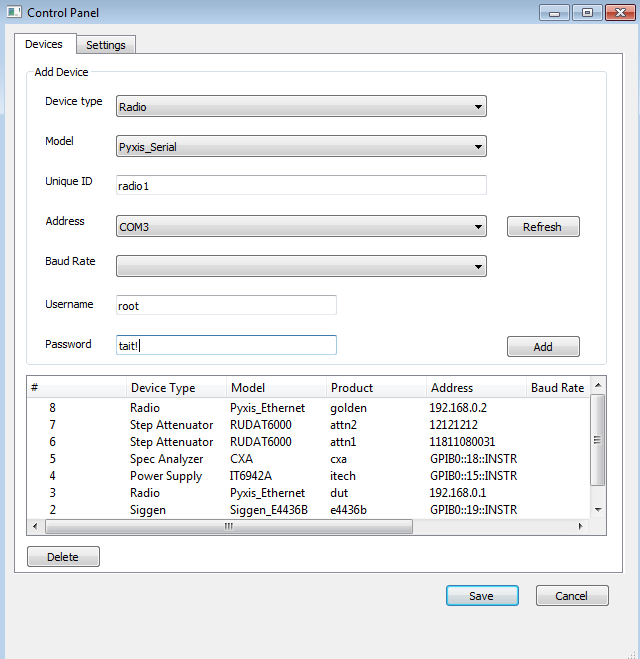
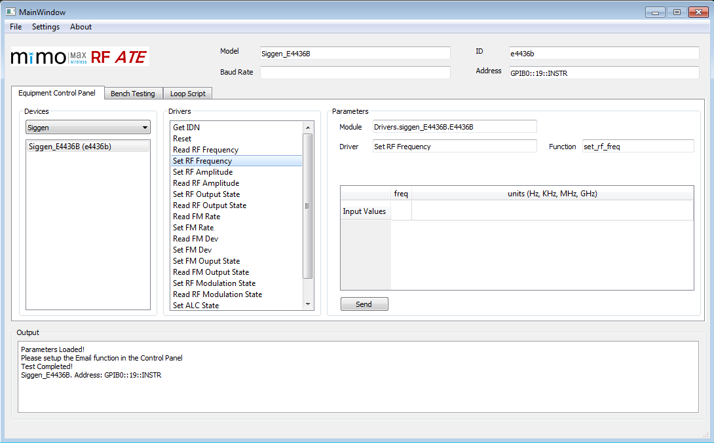
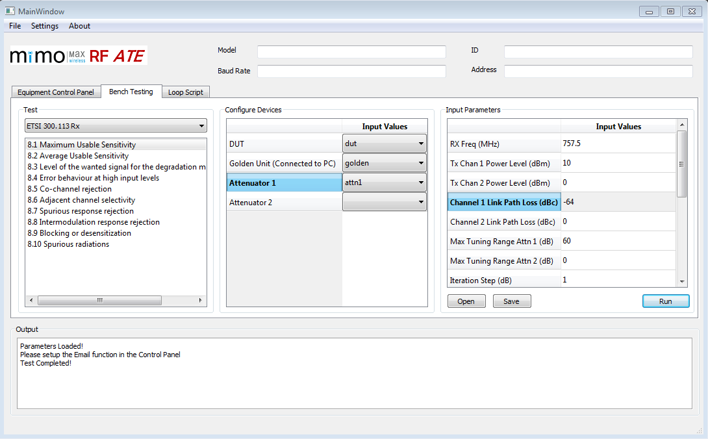
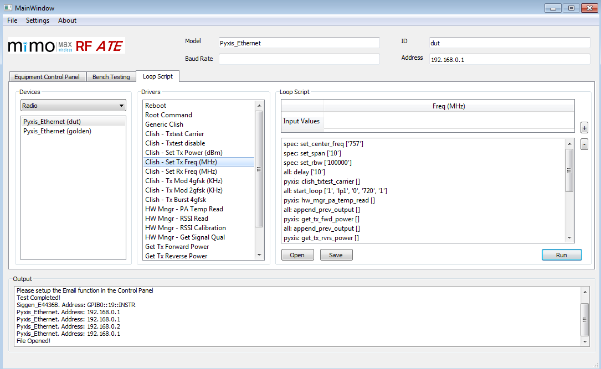

During my third year of study, I interned at Mimomax Wireless, a Christchurch-based company specialising in the design and manufacturing of Multiple Input Multiple Output Radios.
My assignment was to design and develop an automated testing software, simplifying the labour-intensive process of testing new radios.
Project requirements
- User-friendly GUI — intuitive interface for ease of use.
- Scalable architecture — ability to accommodate new developments seamlessly.
- VISA interface compatibility — integration with VISA for enhanced flexibility.
The software was entirely crafted in Python, using PyQt for the GUI and VISA for test equipment drivers. Given my initial unfamiliarity with both, there was a steep learning curve — but it paid off.
Functionality overview
Upon initiating the software, it undergoes an initialization phase, dynamically discovering available drivers and configuring the GUI accordingly.
Three user modes
- Equipment control panel — digital control to send commands via the VISA interface.
- Bench testing — running compliance test scripts with user-entered parameters.
- Loop script — creating and executing custom test scripts through a drag-and-drop interface.
Visuals
Control panel
Configure the device under test and set parameters.

Equipment control panel
Dynamic loading based on available drivers, acting as a consolidated electronic control panel to remotely control devices.

Bench testing
Enables engineers to run pre-compiled test cases in the background with minimal intervention. Used by the team during the V&V stage to verify that the product meets regulatory standards.

Loop script
Allows engineers to create automated test scenarios without coding, using a drag-and-drop interface.

Impact
The software drastically reduces human time by 98%, enabling more productive utilisation rather than mundane testing.
Remarkably, this tool is still in use today — years later — by the Mimomax team.